DEP2 analysis workflow
Zhenhuan Feng
03_DEP2_analysis.RmdAbstract
This vignette introduces proteomics analysis workflow in DEP2 package. Here, we utilized the example dataset from a multiple omics study of silicosis mouse model.
Introduction
DEP2 is a downstream analysis toolkit for mass spectrometry-based quantitative proteomics data. The package contains an integrated workflow for proteomics analysis, including data processing, missing value imputation, hypothesis test, visualization and downstream function exploration. It accepts various of proteomics results generated by upstream search and quantitative software and provides functions to format table. In the vignette, we utilize the built-in data in DEP2. The native tables out from upstream software are available in this repository.
Now, DEP2 provide three types of differential proteomics analysis:
-
Protein-Level Expression/Enrichment Analysis Pipeline
This pipeline is basically follows the method in
DEP, and requires a protein-level quantitative result (e.g., proteingroups.txt). -
Protein Expression/Enrichment Analysis Pipeline with Peptide-protein aggregation.
This pipeline utilizes the peptide to protein summarization strategies in
QFeatures, and requires a peptide-level quantitative result (e.g. peptide.txt). -
Pipeline for Post-Translational Modification (PTM)-Specific Proteomics.
This pipeline is derived from the first one and requires PTM pepeide data as input. It includes the additional modification information in analysis.
In addition to these proteomics analysis pipelines, DEP2 packages an optional RNA-seq analysis pipeline from DESeq2. Downstream exploration functions are also integrated into workflow, including functional enrichment provided by clusterProfiler (Wu et al. 2021) and ReactomePA`, protein-protein interaction inference from STRING database, and time-course expression pattern clustering though cmeans cluster.
Differentially expression analysis
The steps of four analysis pipelines different slightly, such as the input table read in. For more details, please refer to the vignette titled Data import.
Protein-Level Expression/Enrichment Analysis Pipeline
- Loading data
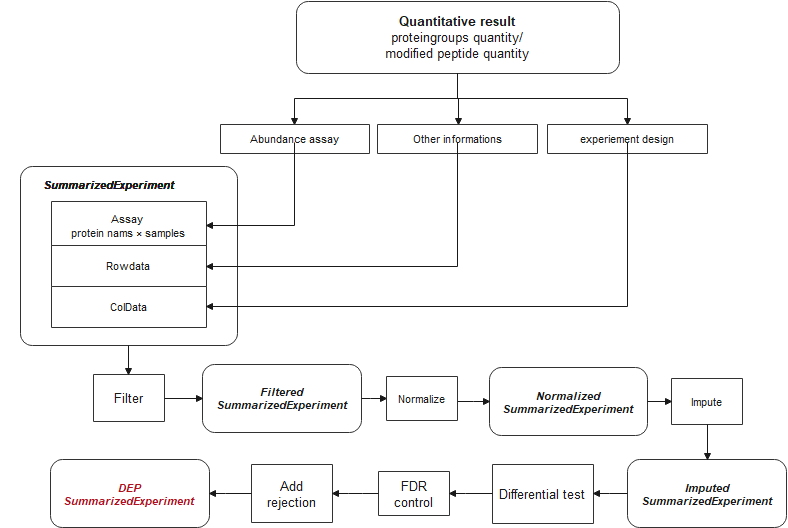
# ProteinGroups table
data("Silicosis_pg")
# Format name(gene symbol) and id(protein ID).
# Generate a unique names for each protein. names and ids are columns in table
unique_pg <- make_unique(Silicosis_pg, names = "Gene.names",
ids = "Protein.IDs", delim = ";") - Converting SE object
# Take expression columns(LFQ intensity in this cases).
ecols <- grep("LFQ.intensity.", colnames(unique_pg))
# Construct SE. The experiement design is exctracted from column.
se_pg <- DEP2::make_se_parse(unique_pg, columns = ecols, mode = "delim",
sep = "_", remove_prefix = T, log2transform = T)- Filtering
The result table may contain undesired features such as reverse sequences or contaminant protein hits. Additionally, missing values (MVs) are inevitable in label-free MS-based proteomics, especially for DDA data. Low quantity features with too many missing values can introduce noise and bias into the analysis, potentially leading to false positive.Filtering out reverse, contaminant, and low-quality features with many missing values is necessary before performing statistical tests to improve accuracy and reliability of the statistical tests. The filter_se function can be used to filter features based on either an MVs threshold or other specified criteria.
## Filter on MVs.
filter_pg <- filter_se(se_pg,
thr = 1, ## the threshold of missing number in at least one condition
fraction = 0.3 ## the threshold of missing occupancy in each protein
)
#> filter base on missing number is <= 1 in at least one condition.
#> filter base on missing number fraction < 0.3 in each row
## Further filter can be performed though filter_formula.
### Fox example, remove decoys or contaminants.
filter_pg <- filter_se(filter_pg,
filter_formula = ~ Reverse != '+' & Potential.contaminant !="+" ## filter upon Reverse and contaminant
)
#> filter base on giving formula
### Or set a unique.peptide threshold.
filter_pg <- filter_se(filter_pg,
filter_formula = ~ Unique.peptides > 0)
#> filter base on giving formula
get_df_wide(se_pg)$Reverse %>% table
#> .
#> +
#> 10378 340
get_df_wide(filter_pg)$Reverse %>% table
#> .
#>
#> 8982
(plot_frequency(se_pg) + ggtitle("Identification overlap before filter")) /
(plot_frequency(filter_pg) + ggtitle("Identification overlap after before filter"))
- Normalization
In the DEP and DEP2 workflow, assay is log2-transformed during SE construction. And proteingroup assay is further normalized using variance stabilizing transformation(vsn).
norm_pg <- normalize_vsn(filter_pg)
plot_normalization(filter_pg, norm_pg)
- imputation
Even after filtering, a considerable proportion of MVs may still remain in the assay.
plot_missval(filter_pg)
MVs can be classified as missing at random (MAR), or missing not at random (MNAR) based on the frequency and intensity of the NA signals. The DEP2::impute function provides kinds of imputation methods for SE objects. In addition to the methods Inheriting from DEP, impute also includes imputation functions from the MSnbase and MsCoreUtils packages. These methods include:
– Left-censored imputation methods, replace: “MinDet,” “MinProb,” “min”(LOD), “QRILC,” “zero,” “man”(impute by a left-shifted distribution)
– Local similarity methods: “knn,” “nbavg”
– Global-structure methods: “MLE,” “BPCA”
For more details on imputation, please refer to the vignettes about imputation in the DEP and MSnbase packages. Additionally, DEP2 includes two machine learning based imputation in impute: “RF” and “GSimp”. “RF” uses the missForest::missForest function, which train a random forest based on observed parts of dataset. And “GSimp” is a Gibbs sampler based left-censored imputation method proposed by Runmin Wei, Jingye Wang, etc. These two methods may take a long time on iteration but are reported that they could draw a better estimation on missing values.
set.seed(35)
sample_rows <- sample(1:nrow(norm_pg), 300)
norm_pg_sample = norm_pg[sample_rows,] # random sample 150 features to reduce runing time
plot_detect(norm_pg_sample)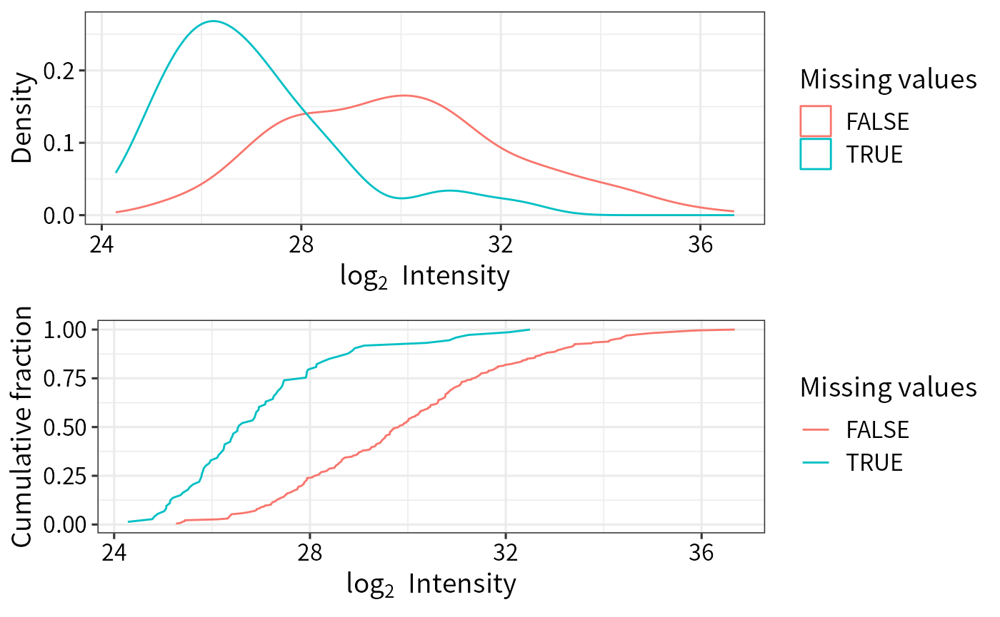
## Impute missing data using random draws from a Gaussian distribution centered around a minimal value (for MNAR)
imp_pg_MinProb <- DEP2::impute(norm_pg_sample, fun = "MinProb", q = 0.01)
#> [1] 0.31744
## Impute missing data using k-nearest neighbour approach
imp_pg_knn <- DEP2::impute(norm_pg_sample, fun = "knn")
## Impute missing data using missForest
imp_pg_RF <- DEP2::impute(norm_pg_sample, fun = "RF", ntree = 50, mtry = 5)
## Impute missing data using Gibbs
imp_pg_GSimp <- DEP2::impute(norm_pg_sample, fun = "GSimp", hi_q = 0.1,
iters_each=40, iters_all=8)
#> Iteration 1 start...end!
#> Iteration 2 start...end!
#> Iteration 3 start...end!
#> Iteration 4 start...end!
#> Iteration 5 start...end!
#> Iteration 6 start...end!
#> Iteration 7 start...end!
#> Iteration 8 start...end!
## Impute missing data using QRILC
imp_pg_QRILC <- DEP2::impute(norm_pg_sample, fun = "QRILC") The distribution of mean intensity of proteingroups with or without MVs
plot_detect(norm_pg_sample) The difference among imputation methods.
The difference among imputation methods.
NAs <- is.na(assay(norm_pg_sample))
## the imputed values by different methods.
imps <- list("GSimp" = imp_pg_GSimp, "QRILC" = imp_pg_QRILC, "MinProb" = imp_pg_MinProb, "RF" = imp_pg_RF, "knn" = imp_pg_knn) %>%
lapply(function(se){
x = assay(se) %>% data.frame %>% gather("label", "value") %>%
left_join(colData(se)[c("label","condition")],copy = T) %>%
magrittr::extract(as.vector(NAs),)
}) %>% data.table::rbindlist(idcol = "method")
## the original normalized values without imputation
nonimps <- assay(norm_pg_sample) %>% data.frame %>% gather("label", "value") %>%
left_join(colData(norm_pg_sample)[c("label","condition")],copy = T) %>%
magrittr::extract(!as.vector(NAs),) %>% mutate(method = "non_impute") %>%
dplyr::select(method,everything())
library(ggridges)
ggplot(rbind(imps, nonimps),aes(x = value,y = factor(method,level = unique(method)))) +
geom_density_ridges(fill = "#027ad450", scale = 1.2,
jittered_points = TRUE,position = position_points_jitter(height = 0),
point_shape = '|', point_size = 2, point_alpha = 1, alpha = 0.7) +
ylab("Impute method")+ ylab("Log2 value") + xlim(c(9,39))+
theme_DEP1()
Left-censored approaches such as MinProb and GSimp replace MVs with conservatively low values, while the local similarity method “knn” and the global data learning method “RF” impute relatively larger values. These two kinds of methods cater to MNAR and MAR, respectively. However, “knn” will impute a mean value when the row contains more than 50% missing values.
rm(list = c("norm_pg_sample", "imp_pg_knn","imp_pg_MinProb","imp_pg_RF","imp_pg_GSimp"))
## Impute missing data using q-th quantile for following analysis
imp_pg <- impute(norm_pg, fun = "MinDet" ,q = 0.01)
#> Imputing along margin 2 (samples/columns).- Hypothesis testing
The test_diff function performs a moderated t-test using limma. In DEP, p-values are corrected, using the fdrtool to classify significantly regulated/enriched candidates and stable proteins. DEP2 additionally provides two alternative frequently-used FDR control methods: “Benjamini-Hochberg fdr” and “Storey’s qvalue.”
## Test every sample versus PBS control
diff_pg <- test_diff(imp_pg, type = "control", control = "PBS", fdr.type = "BH")
#> Tested contrasts: W10_vs_PBS, W2_vs_PBS, W4_vs_PBS, W6_vs_PBS, W9_vs_PBS
#> BH
## Test on manual contrasts
diff_pg2 <- test_diff(imp_pg, type = "manual", test = c("W4_vs_PBS"), fdr.type = "Storey's qvalue")
#> Tested contrasts: W4_vs_PBS
#> Storey's qvalueFunction add_rejections can classify significant hits according L2FC (lfc) and adjusted p value (alpha) threshold.
## Add significant rejections for features, based on
dep_pg <- add_rejections(diff_pg, alpha = 0.01, lfc = 2)
## get the significant subset
dep_pg_sig <- get_signicant(dep_pg)
nrow(dep_pg_sig)
#> [1] 249Use the plot_volcano function to quickly visualize the results.
### volcano plot on contrast "W4_vs_PBS"
plot_volcano(dep_pg, contrast = "W4_vs_PBS", adjusted = F)
## plot the cutoff line
plot_volcano(dep_pg, contrast = "W4_vs_PBS", adjusted = F,
add_threshold_line = "intersect", pCutoff = 0.05, fcCutoff = 1)
#> add intersect threshold line. fcCutoff = 1pCutoff = 0.05
In addition to the intersect method, add_rejections can draw a curve cutoff approach described by Eva C.Keilhauer. Instead of intersect straight lines, the approach uses curve lines with \(y > c/(x - x_0)\), where \(x\) is the log2 FC, \(y\) is the adjusted p values of features. The parameters c and \(x_0\) represent the curvature and minimum L2FC, respectively. The value of \(x_0\) is determined using the standard deviation \(\sigma\) by \(x_0 = x_0.fold*\sigma\). \(\sigma\) is the standard deviation of the Gaussian curve distribution of log2 fold changes in each contrast.
## thresholdmethod = "curve"
dep_pg_curve <- add_rejections(diff_pg, thresholdmethod = "curve", curvature = 2, x0_fold = 2)
## the cutoff line on volcano
plot_volcano(dep_pg_curve, contrast = "W4_vs_PBS", add_threshold_line = "curve", curvature = 2, x0_fold = 2) /
plot_volcano(dep_pg_curve, contrast = "W6_vs_PBS", add_threshold_line = "curve", curvature = 2, x0_fold = 2)
#> add curve threshold line. Sigma = 0.416241386089189, x0 = 0.832482772178379, curvature = 2
#> add curve threshold line. Sigma = 0.478600344109222, x0 = 0.957200688218444, curvature = 2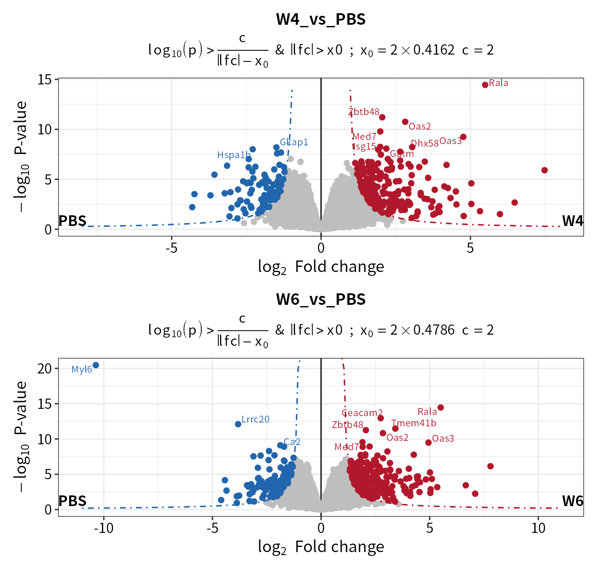
You can check the \(\sigma\) and the fitted Gaussian curve via the plot_diff_hist function.
## Check the fitted Gaussian curve
plot_diff_hist(dep_pg_curve, contrasts = c("W4_vs_PBS", "W6_vs_PBS"))
## Get the fit result
plot_diff_hist(dep_pg_curve, plot = F) ## a table of gaussian args \sigma and \mu
#> contrast mu sigma2
#> 1 W10_vs_PBS_diff 0.01374325 0.2407074
#> 2 W2_vs_PBS_diff 0.02327110 0.2266282
#> 3 W4_vs_PBS_diff 0.02511490 0.1732569
#> 4 W6_vs_PBS_diff 0.02201209 0.2290583
#> 5 W9_vs_PBS_diff 0.02354730 0.2595546The plot_heatmap function can plot a heatmap for significant candidates.
plot_heatmap(dep_pg)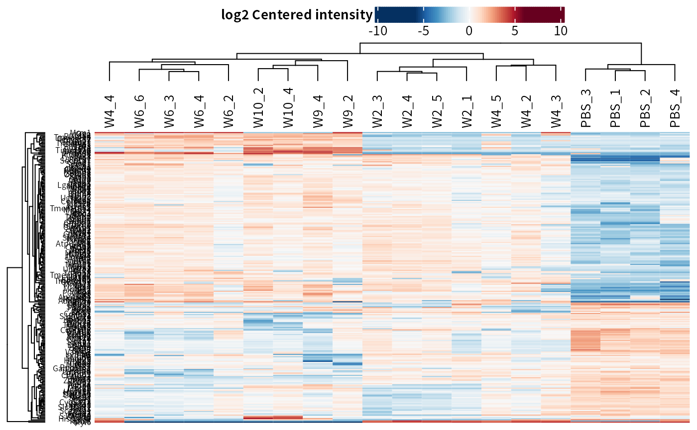
## Reorder columns by condition
dep_pg = DEP2::Order_cols(dep_pg,order = c("PBS","W2","W4","W6","W9","W10"))
plot_heatmap(dep_pg, cluster_columns = F, kmeans = T, k = 5, seed = 1) # cluster features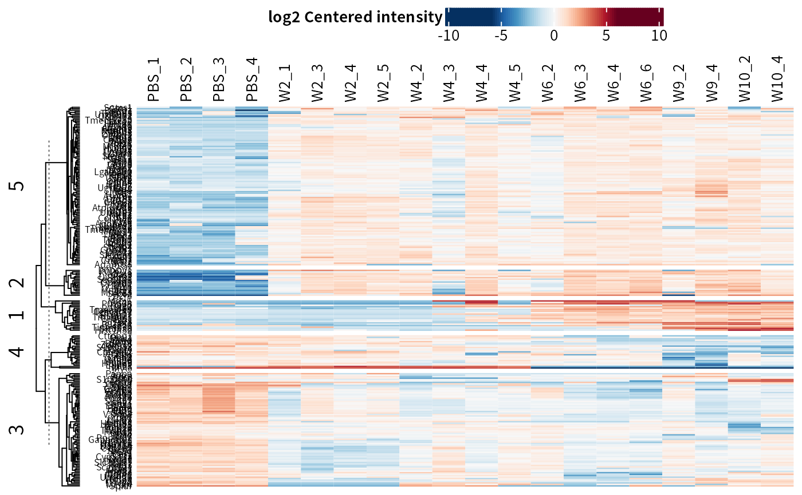
## Only plot the clusters that are up-regulated in treatment groups.
plot_heatmap(dep_pg, cluster_columns = F, kmeans = T, k = 5, seed = 1, col_limit = 4,
split_order = c(1,2,5)
)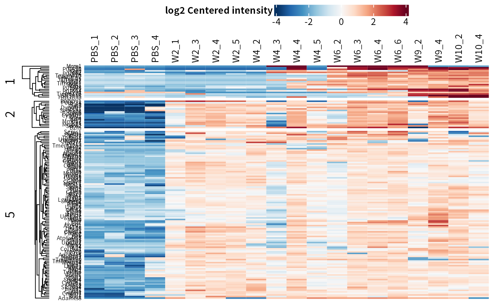
## plot on select contrast
plot_heatmap(dep_pg, manual_contrast = "W4_vs_PBS")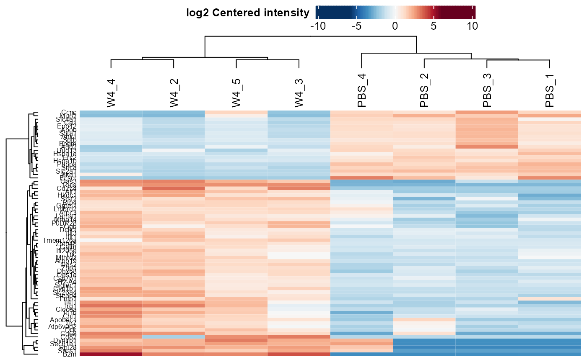
Protein Expression/Enrichment Analysis Pipeline with Peptide-protein Aggregation.
The second pipeline involves aggregating protein abundance from peptide quantity data. The analysis workflow differs from the previous one in terms of data processing steps.

- Loading Data
data("Silicosis_peptide")- Converting QFeatures Object
The make_pe/make_pe_parse functions can be used to convert a QFeatures object. These functions have a similar usage pattern as the make_se series functions.
## Here we only select two groups to save computational cost in these vignette
(ecols <- grep("Intensity.PBS|Intensity.W4", colnames(Silicosis_peptide), value = T))
#> [1] "Intensity.PBS_1" "Intensity.PBS_2" "Intensity.PBS_3" "Intensity.PBS_4"
#> [5] "Intensity.W4_2" "Intensity.W4_3" "Intensity.W4_4" "Intensity.W4_5"
pe <- make_pe_parse(Silicosis_peptide, columns = ecols, mode = "delim")
pe
#> An instance of class QFeatures containing 1 assays:
#> [1] peptideRaw: SummarizedExperiment with 143528 rows and 8 columns- Filtering
The QFeatures objects can be filtered using filter_pe. Its usage is similar to function filter_se and can filter out unexpected features based on missing ratio or identification information in certain rowdata columns.
filt_pe <- filter_pe(pe,
thr = 1,fraction = 0.4, ## filter based on missing values
filter_formula = ~ Reverse != '+' & Potential.contaminant !="+" )
#> filter base on missing number is <= 1 in at least one condition.
#> filter base on missing number fraction < 0.4 in each row
#> filter base on giving formula- Imputation
Imputation could be performed before normalization in order to reduce the potential effect caused by MVs. For instance, “quantiles.robust” normalization cannot work on assay with MVs. However, it is also acceptable to normalize data before replacing MVs, such as using “vsn” followed by “knn” imputation.
## Use QFeatures::addAssay() and DEP2::impute
pe <- QFeatures::addAssay(filt_pe,
DEP2::impute(filt_pe[["peptideRaw"]], fun = "QRILC"),
name = "peptideImp")
plot_imputation(pe[["peptideRaw"]], pe[["peptideImp"]])
- Normalization
The normalize_pe function perform data normalization . Four normalization methods are available: “diff.median,” “quantiles,” “quantiles.robust” ,“vsn”. Notice that quantiles.robust cannot handle data table with MVs (ie NA), so it is necessary to impute in advance.
pe <- DEP2:::normalize_pe(pe,method = "quantiles.robust",
i = "peptideImp", ## nomalize on which assay
name = "peptideNorm" ## output assay name
)
plot_normalization(pe[["peptideRaw"]],pe[["peptideImp"]],pe[["peptideNorm"]])
- Aggregation
DEP2 offers the aggregate_pe function based on QFeatures::aggregateFeatures. The summarisation approach aggrefun can be “RobustSummary” (also called MSqRobSum) (Sticker et al. 2020), “medianPolish,” “totalMean.” Details can be seen in ?aggregateFeatures. And proteingroups can be summed by “Unique + Razor” peptides or only “Unique” peptides. aggregate_pe require several minutes depending on the peptide assay scale.
begin_time = Sys.time()
pe <- DEP2::aggregate_pe(pe,
aggrefun = "RobustSummary",
aggregate_Peptide_Type = "Unique + Razor",
fcol = "Proteins", # the protein ID column in input table
i = "peptideNorm", # the assay to aggregate
reserve = "Gene.names" # reserve the Gene.names in row data.
)
#> [1] "aggregate by Unique + Razor peptides"
#> [1] "peptides distribution finished"
#> [1] "begin assay aggregate"
#> [1] "begin reducedataframe"
#> [1] "reducedataframe finiched"
#> [1] "assay aggregate finished"
#> [1] "aggregation finished"
print(Sys.time() - begin_time) # aggregate cost several minutes depent on the assay scale
#> Time difference of 1.524174 mins
pe # protein result is in the protein assay
#> An instance of class QFeatures containing 4 assays:
#> [1] peptideRaw: SummarizedExperiment with 98219 rows and 8 columns
#> [2] peptideImp: SummarizedExperiment with 98219 rows and 8 columns
#> [3] peptideNorm: SummarizedExperiment with 98219 rows and 8 columns
#> [4] protein: SummarizedExperiment with 9768 rows and 8 columns
se_pep <- pe2se(pe, names = "Gene.names", ids = "smallestProteingroups")- Differential Test
The following differential test is the same as the proteingroups pipeline. Use test_diff and add_rejections to classify significant proteins.
## Differential test
diff_pep <- DEP2::test_diff(se_pep,type = "control", control = "PBS", fdr.type = "BH")
#> Tested contrasts: W4_vs_PBS
#> BH
## Add rejections
dep_pep <- add_rejections(diff_pep,alpha = 0.01, lfc = 2)
get_signicant(dep_pep) %>% nrow
#> [1] 76- Data visualization functions also work for results from re-aggregation pipeline.
## Volcano
plot_volcano(dep_pep, contrast = "W4_vs_PBS", add_threshold_line = "intersect")
#> add intersect threshold line. fcCutoff = 1pCutoff = 0.05
## Heatmap
plot_heatmap(dep_pep, kmeans = T,k = 5,col_limit = 6) 
Pipeline for Post-Translational Modification (PTM)-Specific Proteomics.
DEP2 has designed a new workflow for post-modification proteomics data analysis starting from modified peptides’ quantitative results. The post-translation modification information is necessary to distinguish modified sites, including position, modified residue (amino acid), gene name, or protein ID associated with the modification.
make_unique_ptm creates (or overwrites) the PTM information columns, including name, ID, gene_name, protein_ID, modified_aa, modified_pos. The name and ID columns are the identifiers of each modified-peptide, following such naming rule: ’(gene name/protein ID)_(modified amino acid)(position of modification)’ (e.g., “TBCA_K51” and “O75347_K51”).
- Loading Data
The example we used here is the phosphorylated peptide result, table Phospho (STY)Sites.txt, from MaxQuant.
## phosphorylated peptides table of the silicosis mouse model.
data(Silicosis_phos)
## Format the modification information and generated modified-peptides identifier.
## aa and pos is the modified amino acids and modified site in protein.
unique_pho <- make_unique_ptm(Silicosis_phos, gene_name = "Gene.names",
protein_ID = "Protein", aa = "Amino.acid",
pos = "Position") The name and ID are generated upon PTM information columns.
DT::datatable(unique_pho[1:7,c("name","ID","Gene.names","Protein","Amino.acid","Position")],
options = list(scrollX = T,pageLength = 7))- Coverting SE
## Take 'Intensity' columns.
ecols <- grep("Intensity.", colnames(unique_pho))
## Construct a SE object mentioned before.
se_ptm <- make_se_parse(unique_pho, columns = ecols,
mode = "delim", sep = "_", remove_prefix = T, log2transform = T)- Filtering
The following steps are basically similar to the protomics analysis pipeline. filter_se is a universal filter function for SE objects. An additional threshold should be set on ‘Localization.prob’ in the MaxQuant modification result.
## Filter base on both missing occupancy and the localization probability for this site.
filt_ptm <- filter_se(se_ptm,
thr = 1, fraction = 0.3,
filter_formula = ~ Reverse!="+" &
Potential.contaminant!="+" &
Localization.prob>0.7
)- Normalization
## VSN normalization
norm_ptm <- normalize_vsn(filt_ptm)- Imputation
## KNN impute relatively larger values
imp_ptm <- impute(filt_ptm, fun= "knn")
#> Cluster size 11729 broken into 6954 4775
#> Cluster size 6954 broken into 2918 4036
#> Cluster size 2918 broken into 2328 590
#> Cluster size 2328 broken into 1841 487
#> Cluster size 1841 broken into 1661 180
#> Cluster size 1661 broken into 1404 257
#> Done cluster 1404
#> Done cluster 257
#> Done cluster 1661
#> Done cluster 180
#> Done cluster 1841
#> Done cluster 487
#> Done cluster 2328
#> Done cluster 590
#> Done cluster 2918
#> Cluster size 4036 broken into 56 3980
#> Done cluster 56
#> Cluster size 3980 broken into 2552 1428
#> Cluster size 2552 broken into 2523 29
#> Cluster size 2523 broken into 468 2055
#> Done cluster 468
#> Cluster size 2055 broken into 1044 1011
#> Done cluster 1044
#> Done cluster 1011
#> Done cluster 2055
#> Done cluster 2523
#> Done cluster 29
#> Done cluster 2552
#> Done cluster 1428
#> Done cluster 3980
#> Done cluster 4036
#> Done cluster 6954
#> Cluster size 4775 broken into 2517 2258
#> Cluster size 2517 broken into 1379 1138
#> Done cluster 1379
#> Done cluster 1138
#> Done cluster 2517
#> Cluster size 2258 broken into 861 1397
#> Done cluster 861
#> Done cluster 1397
#> Done cluster 2258
#> Done cluster 4775- Differantail testing
diff_ptm <- test_diff(imp_ptm, type = "manual", test = "PBS_vs_W6" , fdr.type = "BH")
#> Tested contrasts: PBS_vs_W6
#> BH
dep_ptm <- DEP2::add_rejections(diff_ptm, alpha = 0.05, lfc = 1)
plot_volcano(dep_ptm,adjusted = T, add_threshold_line = "intersect")
#> add intersect threshold line. fcCutoff = 1pCutoff = 0.05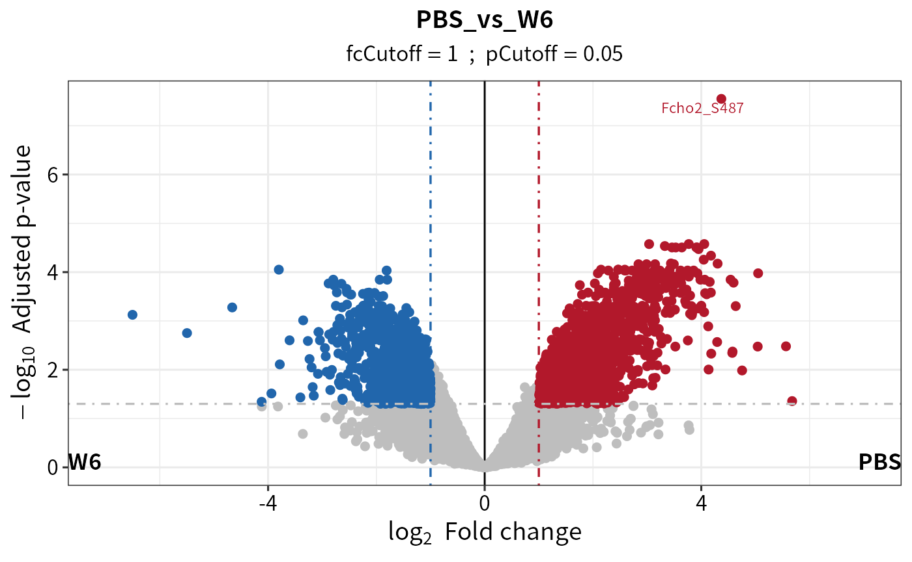
Additional Analysis Pipeline for RNA-seq Counts
Multi-omics studies have already become a widespread method in research. In particular, proteomics-transcriptomics combined studies provide insights into regulatory mechanisms from multiple perspectives. Therefore, DEP2 packages a pipeline for RNA-seq data from DESeq2.
- Loading Data
data(Silicosis_counts)
DT::datatable(head(Silicosis_counts), options = list(scrollX = T,pageLength = 6))- Constructing DESeqDataSet
The make_dds function can be used to convert a DESeqDataSet object. Its usage is similar to function make_se.
dds <- make_dds_parse(Silicosis_counts,mode = "delim")
dds
#> class: DESeqDataSet
#> dim: 24936 18
#> metadata(1): version
#> assays(1): counts
#> rownames(24936): ENSMUSG00000000001 ENSMUSG00000000028 ...
#> ENSMUSG00000118633 ENSMUSG00000118636
#> rowData names(0):
#> colnames(18): PBS_1 PBS_2 ... W10_2 W10_3
#> colData names(4): label ID condition replicate- Filtering
The DESeqDataSet object inherits from SummarizedExperiment.
inherits(dds,"SummarizedExperiment")
#> [1] TRUEFilter_se can also be used to filter DESeqDataSet objects. The rowsum_threshold parameter sets a threshold on the row sum of counts.
dds <- filter_se(dds, fraction = 0.3, thr = 1, rowsum_threshold = 35)
#> filter base on missing number is <= 1 in at least one condition.
#> filter base on missing number fraction < 0.3 in each row
#> filter base on counts sum >=35- Transforming ID
In this case, the gene identifier is Ensembl ID. To conveniently check the genes, DEP2 can transform the IDs to gene symbols using the OrgDb databases. The ID_transform function performs the ID conversion and replaces the rownames of the object. This function requires the species annotation database. You can execute the check_organismDB_depends function to verify and install the necessary package if it is not already installed.
## Check if the annotation package has been already installed. Or install it if not yet.
check_organismDB_depends(organism = "Mouse")
#>
#> [1] TRUE
head(rownames(dds),4)
#> [1] "ENSMUSG00000000001" "ENSMUSG00000000028" "ENSMUSG00000000049"
#> [4] "ENSMUSG00000000056"
## Transform ID
dds <- DEP2::ID_transform(dds, species = "Mouse")
#> org.Mm.eg.db
#> Loading required package: org.Mm.eg.db
#> Loading required package: AnnotationDbi
#>
#> Attaching package: 'AnnotationDbi'
#> The following object is masked from 'package:dplyr':
#>
#> select
#> 'select()' returned 1:many mapping between keys and columns
head(rownames(dds),4)
#> [1] "Gnai3" "Cdc45" "Apoh" "Narf"If needed, ID_transform can be used on proteinomics data, for example:
DEP2::ID_transform(dep_pg,
species = "Mouse",
from_columns = "ID",
fromtype = "UNIPROT")- Differential Test
The differential test steps are similar to the foregoing pipelines, but the test_diff is replaced by test_diff_deg to call DESeq2.
diff <- test_diff_deg(dds, type = "control", control = "PBS")
#> Performing DESeq analysis...
#> estimating size factors
#> estimating dispersions
#> gene-wise dispersion estimates
#> mean-dispersion relationship
#> final dispersion estimates
#> fitting model and testing
#> Formatting analysis result...
#> extracted results: W2_vs_PBS, W4_vs_PBS, W6_vs_PBS, W10_vs_PBS
#> Calulate a rlog & log2 transform assay, stored in rlg or ntd slot...
deg <- add_rejections(diff, alpha = 0.01, lfc = 1)Export result table
The function get_results can be used to obtain the result table or significant subset from differential test results.
## Get result table
DT::datatable(head(get_results(dep_pg)), options = list(scrollX = T,pageLength = 5))
## Get the significant subset
sig_deg = get_results(deg)
class(sig_deg)
#> [1] "data.frame"The function get_df_wide can exctract the full table from a DEP result.
## Get full data set with row information.
DT::datatable(head(get_df_wide(dep_pg)), options = list(scrollX = T,pageLength = 5))Function get_signicant can get results of significant candidates.
## Get full data set of significant features
get_signicant(dep_pg,return_type = "table") %>% dplyr::select(ends_with("significant")) %>%
summary
#> W10_vs_PBS_significant W2_vs_PBS_significant W4_vs_PBS_significant
#> Mode :logical Mode :logical Mode :logical
#> FALSE:152 FALSE:140 FALSE:178
#> TRUE :97 TRUE :109 TRUE :71
#> W6_vs_PBS_significant W9_vs_PBS_significant significant
#> Mode :logical Mode :logical Mode:logical
#> FALSE:114 FALSE:141 TRUE:249
#> TRUE :135 TRUE :108Result comparation
After identifying significant candidates through add_rejections, plot_multi_venn and plot_multi_heatmap can directly compare the significant result from multiple omics experiments via name identifiers.
Use plot_multi_venn to compare the differences between two or more pipelines, such as the analysis results from MQ proteingroups or the peptides re-aggregation pipeline.
## Test on the contrast W4_vs_PBS.
diff_pg <- test_diff(imp_pg, type = "manual", test = c("W4_vs_PBS"), fdr.type = "Storey's qvalue")
dep_pg <- diff_pg %>% add_rejections(alpha = 0.05,lfc = 2)
diff_pep <- DEP2::test_diff(se_pep,type = "control", control = "PBS", fdr.type = "Storey's qvalue")
dep_pep <- add_rejections(diff_pep,alpha = 0.05, lfc =2)
## Filter out pg quantified which only have one peptides.
dep_pep = filter_se(dep_pep,filter_formula = ~.n > 2)
dep_pg = filter_se(dep_pg,filter_formula = ~Razor...unique.peptides > 2)
## Plot Venn to explore the difference between two ways.
plot_multi_venn(omics_list = list(PG= dep_pg, pep=dep_pep))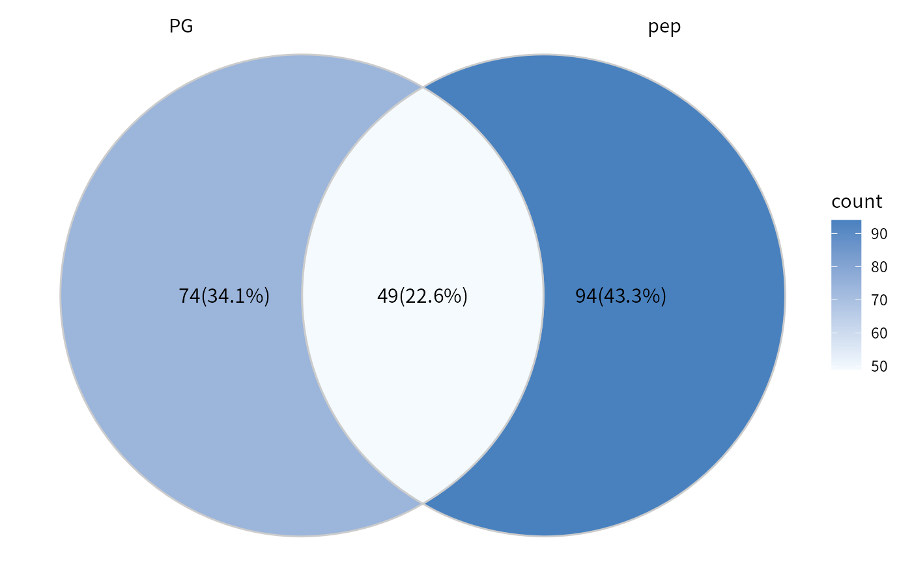
## If set the proteins remained in both result as background.
## dep_pep only contain two conditions of the study. PBS and W4. See the pe_peptides above.
overlap_protein = intersect(rownames(dep_pep), rownames(dep_pg))
plot_multi_venn(omics_list = list(PG= dep_pg, pep=dep_pep), background = overlap_protein)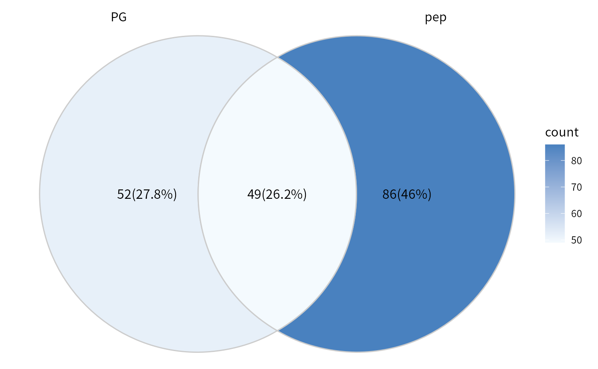
Check the expression of interested proteins/genes accorss omics via plot_multi_heatmap. Here we take some proteins that may be related to IL-1 signaling, the signaling pathway that is reported to be upregulated in silicosis mouse model in the original paper.
## Take the proteins may response to interleukin-1 as an example.
IL1_relative_genes <-c("Irg1", "Il1rn", "Saa3", "Zbp1", "Ccl6",
"Serpine1", "Ccl21a", "Pycard", "Irak2", "Vrk2",
"Fn1", "Il1r1", "Irf1", "Ccl9", "Mapk11", "Tank",
"Mapk13")
## Order the samples by time.
dep_pg <- Order_cols(dep_pg, order = c("PBS","W2","W4","W6","W9","W10"))
## Plot the heatmap upon two DEP results.
plot_multi_heatmap(omics_list = list(PG= dep_pg, pep=dep_pep),
choose_name = IL1_relative_genes,
width = 4)
Post analysis
To reduce the barriers in format conversion between deferential test and downstream analysis, post analysis suites for differential testing results is available in DEP2. The post-analysis functionalities may not be fully completed upon default installation of DEP2. Users have the option to complete these functionalities by executing the “check_” series of functions.
## Check required packages for enrichment analysis
DEP2::check_enrichment_depends()
## Check required packages for PPI
DEP2::check_PPI_depends()As an alternative approach (but one that we do not recommend), users can also choose to proactively specify the installation of all dependent packages when installing DEP2.
## Install all depend packages at once by setting 'dependencies = TRUE'
devtools::install_github("mildpiggy/DEP2", dependencies = TRUE)Besides, functional analyses (functional enrichment or PPI) require species annotation database packages in the R environment. Therefore, the relevant packages must be installed before conducting functional analysis for any organism. You can run the function check_organismDB_depends in the console to check or install the missing packages. Here is an example code:
## Check organism annotation package of a species
## Parameter organism could one of "Chicken", "Human", "Mouse", "Rat", etc.
DEP2::check_organismDB_depends(organism = "Human")Biological function enrichment
Biological functional enrichment functions from enrichR, clusterProfiler and ReactomePA are integrated into test_ORA and test_GSEA functions in DEP2. These functions enable the enrichment analysis of differential testing results obtained from test_diff and add_rejection functions. The objective gene/protein list is extracted and transformed using organism annotation data. Subsequently, the genes are mapped to biological knowledge annotated gene sets. As we mentioned above, DEP2 used the orginsm annotation package to transform protein/gene IDs, therefore the
test_ORA can perform enrichment analysis upon Gene ontology, KEGG or REACTOME data. And test_GSEA is designed for GSEA.
## 1. Extract gene list
diff_pg <- test_diff(imp_pg, type = "manual", test = c("W4_vs_PBS"), fdr.type = "Storey's qvalue")
dep_pg <- diff_pg %>% add_rejections(alpha = 0.01,lfc = 2)
## 2. Check install
check_enrichment_depends() # check required packages
#> [1] TRUE
check_organismDB_depends("Mouse") # organism annotation for mouse
#> [1] TRUE
## Over representation analysis
# On one contrast
res_ora <- DEP2::test_ORA(dep_pg, contrasts = "W4_vs_PBS", species = "Mouse",type = "GO")
#> 86 gene(s) transfrom to ENTREZID from SYMBOL. 2 gene(s) transfrom to ENTREZID from UNIPROT. 4 gene(s) transfrom to ENTREZID from ALIAS.
#> Star enrich GO terms by 92 ENTREZIDs.
class(res_ora)
#> [1] "enrichResult"
#> attr(,"package")
#> [1] "DOSE"
# On each contrasts
res_ora2 <- DEP2::test_ORA(dep_pg, by_contrast = T, species = "Mouse",type = "GO")
#> 86 gene(s) transfrom to ENTREZID from SYMBOL. 2 gene(s) transfrom to ENTREZID from UNIPROT. 4 gene(s) transfrom to ENTREZID from ALIAS.
#> Star enrich GO terms by 92 ENTREZIDs.
class(res_ora2)
#> [1] "enrichResult"
#> attr(,"package")
#> [1] "DOSE"
## Gene set enrichment analysis
res_gsea <- DEP2::test_GSEA(dep_pg, by_contrast = F, species = "Mouse",type = "GO")
#> 8301 gene(s) transfrom to ENTREZID from SYMBOL. 110 gene(s) transfrom to ENTREZID from UNIPROT. 510 gene(s) transfrom to ENTREZID from ALIAS.
#> 61 gene(s) do not match in database.
class(res_gsea)
#> [1] "gseaResult"
#> attr(,"package")
#> [1] "DOSE"The output of test_ORA and test_GSEA is the same object as from source functions, which is seamlessly compatible for plot functions and manipulate function provided for enrichR result. The visualization methods from enrichplot package can be easily draw on output of these two output.
## Dotplot function from DOSE package
library(enrichplot)
enrichplot::dotplot(res_ora)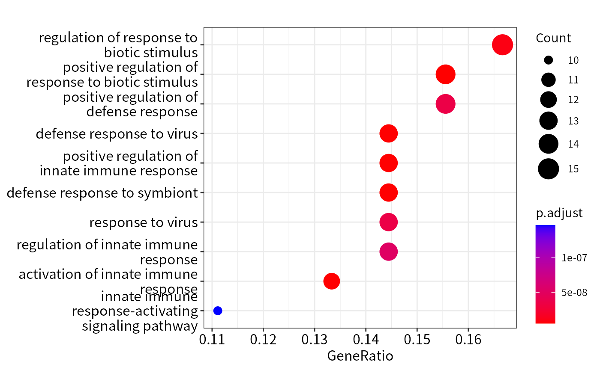
## GSEA plot on one category
enrichplot::gseaplot(res_gsea,geneSetID = "GO:0071347")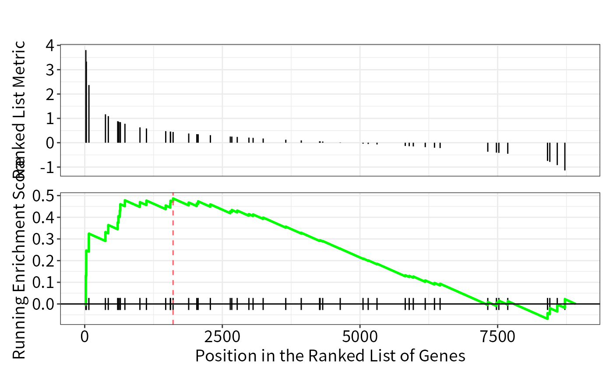
The cnet plotted on the interested biological processes which enriched in GSEA.
## Cnetplot
res_gsea2 <- res_gsea %>%
filter(ID %in% c("GO:0071347","GO:0035329","GO:0032660","GO:0090263","GO:0035456","GO:0038061"))
cnetplot(res_gsea2,foldChange = res_gsea@geneList,node_label = "category",showCategory = 6)
#> Scale for size is already present.
#> Adding another scale for size, which will replace the existing scale.
More usages and details are available in Yu’s introduction to the biomedical knowledge mining book.
Expression pattern cluster
In the time-course omics studies or the experiments with complex group design, identifying key candidates across the entire experiment from numerous contrasts can be challenging. DEP2 provides the get_tc_cluster function to perform time-course cluster for omics data with multiple groups. The function clusters features using the “cmeans” algorithm, and return a list that contains a heatmap plot and cluster result. In the omics experiement with multiple experimental groups, get_tc_cluster can classify genes/proteins according to their expression patterns.
## Perform cluster on signicant protein in all contrast
tc_pg <- get_tc_cluster(get_signicant(dep_pg),
group_order = c("PBS","W2","W4","W6","W9","W10") # Set group order
)
#> aabb[1] "start timeclust"
#> beging 'cm' cluster by dist = 'euclidean'
#> [1] "finish heatmap"
## The time course heatmap
tc_pg$ht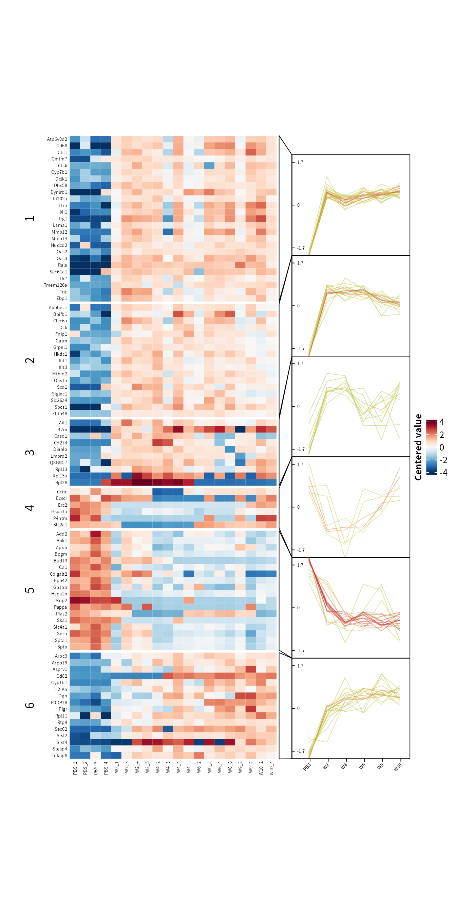
## Expression cluster on phospholated sites
tc_ptm <- get_tc_cluster(get_signicant(dep_ptm),
group_order = c("PBS","W2","W4","W6","W9","W10"), # Set group order
row_font_size = 0,
k = 8,
heatmap_height = 2
)
#> aabb[1] "start timeclust"
#> beging 'cm' cluster by dist = 'euclidean'
#> `use_raster` is automatically set to TRUE for a matrix with more than
#> 2000 rows. You can control `use_raster` argument by explicitly setting
#> TRUE/FALSE to it.
#>
#> Set `ht_opt$message = FALSE` to turn off this message.
#> [1] "finish heatmap"
tc_ptm$ht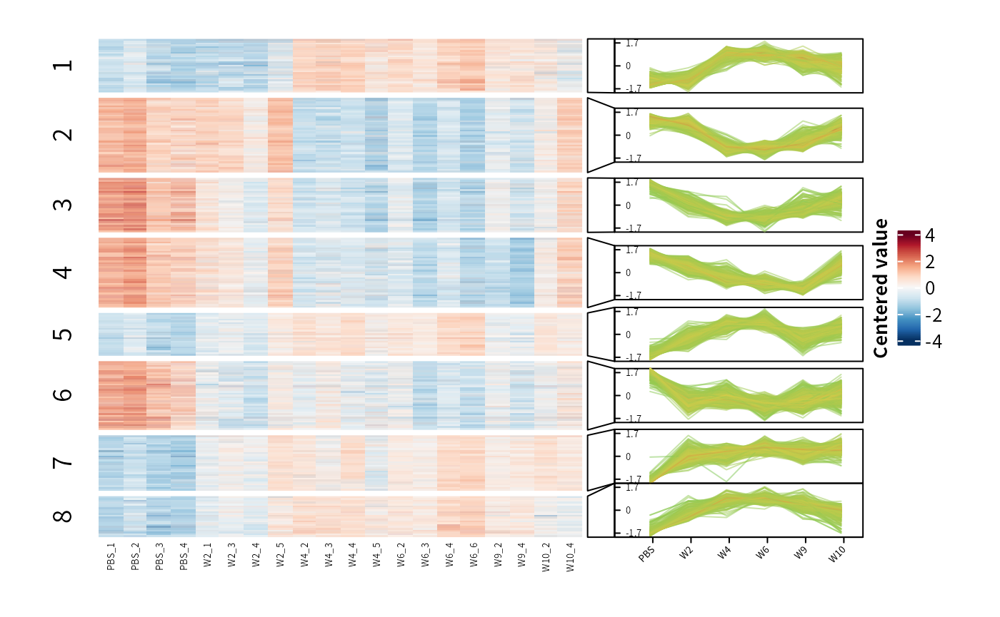
The output of get_tc_cluster contains a heatmap combined with expression line chart, as well as a cluster result table stored in the ‘res’ slot. The cluster table is a data.frame that records the closest cluster, membership values, and expression values.
Protein-protein interaction
DEP2 provides a function test_PPI to construct protein-protein interaction network based on STRING data. test_PPI performs PPI analysis locally. Notably, test_PPI use a local STRING data. The function load_PPIdata checks for the existence of a local database. If the local data is absent, load_PPIdata and test_PPI will try to download the PPI data of the species from website and save in system.file("PPIdata", "species_name",package = "DEP2").
# 1. Check required packages for network construction.
check_PPI_depends()
#> [1] TRUE
# 2. Load STRING data.
## If local STRING is missing, load_PPIdata will download to system.file("PPIdata", "Mouse",package = "DEP2")
load_PPIdata(speciesname = "Mouse")
#> Input species is Mouse The species ID is 10090
#> fristDownload
#> fristDownload
#> fristDownload
#> load succeed
#> [1] "Loading finished!"
# 3.Load STRING data and perform PPI analysis.
## It also automatically download data if loacl files is missing.
PPI_res <- test_PPI(
dep_pg,
contrasts = "W4_vs_PBS",
species = "Mouse",
STRING.version = "11.5",
score_cutoff = 400
)
#> 86 gene(s) transfrom to ENTREZID from SYMBOL. 2 gene(s) transfrom to ENTREZID from UNIPROT. 4 gene(s) transfrom to ENTREZID from ALIAS.
# igraph network
PPI_ig <- PPInetwork(PPI_res,returntype = "igraph")
igraph::plot.igraph(PPI_ig)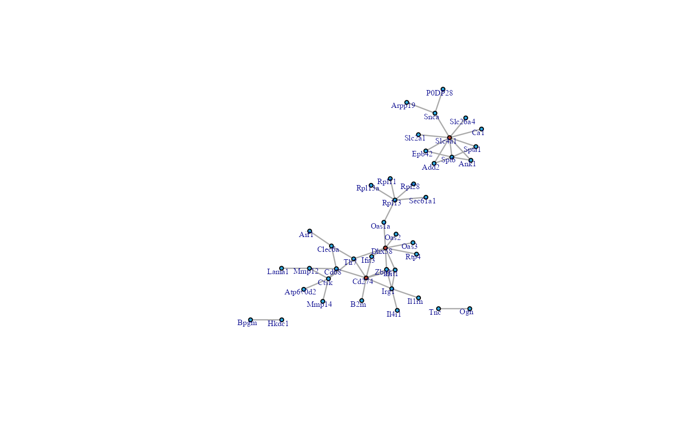
## visNetwork network
PPInetwork(PPI_res,returntype = "visNetwork") Session information
#> R version 4.3.1 (2023-06-16)
#> Platform: x86_64-pc-linux-gnu (64-bit)
#> Running under: Ubuntu 18.04.5 LTS
#>
#> Matrix products: default
#> BLAS: /usr/lib/x86_64-linux-gnu/blas/libblas.so.3.7.1
#> LAPACK: /usr/lib/x86_64-linux-gnu/lapack/liblapack.so.3.7.1
#>
#> locale:
#> [1] LC_CTYPE=zh_CN.UTF-8 LC_NUMERIC=C
#> [3] LC_TIME=zh_CN.UTF-8 LC_COLLATE=zh_CN.UTF-8
#> [5] LC_MONETARY=zh_CN.UTF-8 LC_MESSAGES=zh_CN.UTF-8
#> [7] LC_PAPER=zh_CN.UTF-8 LC_NAME=C
#> [9] LC_ADDRESS=C LC_TELEPHONE=C
#> [11] LC_MEASUREMENT=zh_CN.UTF-8 LC_IDENTIFICATION=C
#>
#> time zone: Asia/Shanghai
#> tzcode source: system (glibc)
#>
#> attached base packages:
#> [1] grid stats4 stats graphics grDevices utils datasets
#> [8] methods base
#>
#> other attached packages:
#> [1] enrichplot_1.20.0 org.Mm.eg.db_3.17.0
#> [3] AnnotationDbi_1.62.2 doRNG_1.8.6
#> [5] rngtools_1.5.2 foreach_1.5.2
#> [7] randomForest_4.7-1.1 ggridges_0.5.4
#> [9] patchwork_1.1.2 missForest_1.5
#> [11] ggplot2_3.4.2 dplyr_1.1.2
#> [13] tibble_3.2.1 DEP2_0.3.7.3
#> [15] R6_2.5.1 limma_3.56.2
#> [17] MSnbase_2.26.0 ProtGenerics_1.32.0
#> [19] mzR_2.34.1 Rcpp_1.0.11
#> [21] MsCoreUtils_1.12.0 SummarizedExperiment_1.30.2
#> [23] Biobase_2.60.0 GenomicRanges_1.52.0
#> [25] GenomeInfoDb_1.36.1 IRanges_2.34.1
#> [27] S4Vectors_0.38.1 BiocGenerics_0.46.0
#> [29] MatrixGenerics_1.12.2 matrixStats_1.0.0
#> [31] tidyr_1.3.0 BiocStyle_2.28.0
#>
#> loaded via a namespace (and not attached):
#> [1] fs_1.6.2 bitops_1.0-7
#> [3] sf_1.0-14 HDO.db_0.99.1
#> [5] httr_1.4.6 RColorBrewer_1.1-3
#> [7] doParallel_1.0.17 tools_4.3.1
#> [9] utf8_1.2.3 DT_0.28
#> [11] lazyeval_0.2.2 GetoptLong_1.0.5
#> [13] withr_2.5.0 graphite_1.46.0
#> [15] gridExtra_2.3 preprocessCore_1.62.1
#> [17] fdrtool_1.2.17 cli_3.6.1
#> [19] textshaping_0.3.6 scatterpie_0.2.1
#> [21] sandwich_3.0-2 labeling_0.4.2
#> [23] sass_0.4.6 mvtnorm_1.2-2
#> [25] proxy_0.4-27 askpass_1.1
#> [27] pkgdown_2.0.7 yulab.utils_0.0.6
#> [29] Rsamtools_2.16.0 systemfonts_1.0.4
#> [31] gson_0.1.0 R.utils_2.12.2
#> [33] DOSE_3.26.1 itertools_0.1-3
#> [35] rstudioapi_0.15.0 impute_1.74.1
#> [37] RSQLite_2.3.1 visNetwork_2.1.2
#> [39] gridGraphics_0.5-1 generics_0.1.3
#> [41] ggVennDiagram_1.2.2 shape_1.4.6
#> [43] crosstalk_1.2.0 GO.db_3.17.0
#> [45] Matrix_1.5-4.1 MALDIquant_1.22.1
#> [47] fansi_1.0.4 imputeLCMD_2.1
#> [49] abind_1.4-5 R.methodsS3_1.8.2
#> [51] lifecycle_1.0.3 yaml_2.3.7
#> [53] edgeR_3.42.4 qvalue_2.32.0
#> [55] Rtsne_0.16 blob_1.2.4
#> [57] crayon_1.5.2 lattice_0.21-8
#> [59] msigdbr_7.5.1 cowplot_1.1.1
#> [61] KEGGREST_1.40.0 magick_2.7.4
#> [63] pillar_1.9.0 knitr_1.43
#> [65] ComplexHeatmap_2.16.0 fgsea_1.26.0
#> [67] rjson_0.2.21 codetools_0.2-19
#> [69] fastmatch_1.1-3 glue_1.6.2
#> [71] ggfun_0.1.1 downloader_0.4
#> [73] pcaMethods_1.92.0 data.table_1.14.8
#> [75] MultiAssayExperiment_1.26.0 treeio_1.24.1
#> [77] vctrs_0.6.3 png_0.1-8
#> [79] gtable_0.3.3 assertthat_0.2.1
#> [81] cachem_1.0.8 xfun_0.39
#> [83] S4Arrays_1.0.4 tidygraph_1.2.3
#> [85] RVenn_1.1.0 survival_3.5-5
#> [87] ncdf4_1.21 iterators_1.0.14
#> [89] gmm_1.8 units_0.8-2
#> [91] ellipsis_0.3.2 nlme_3.1-162
#> [93] ggtree_3.8.0 bit64_4.0.5
#> [95] rprojroot_2.0.3 bslib_0.5.0
#> [97] affyio_1.70.0 tmvtnorm_1.5
#> [99] KernSmooth_2.23-21 colorspace_2.1-0
#> [101] DBI_1.1.3 DESeq2_1.40.2
#> [103] tidyselect_1.2.0 bit_4.0.5
#> [105] compiler_4.3.1 graph_1.78.0
#> [107] glmnet_4.1-7 desc_1.4.2
#> [109] DelayedArray_0.26.6 shadowtext_0.1.2
#> [111] bookdown_0.34 scales_1.2.1
#> [113] classInt_0.4-9 affy_1.78.1
#> [115] rappdirs_0.3.3 stringr_1.5.0
#> [117] digest_0.6.33 rmarkdown_2.23
#> [119] XVector_0.40.0 TCseq_1.23.0
#> [121] htmltools_0.5.5 pkgconfig_2.0.3
#> [123] umap_0.2.10.0 dbplyr_2.3.3
#> [125] highr_0.10 fastmap_1.1.1
#> [127] rlang_1.1.1 GlobalOptions_0.1.2
#> [129] htmlwidgets_1.6.2 farver_2.1.1
#> [131] jquerylib_0.1.4 zoo_1.8-12
#> [133] jsonlite_1.8.7 BiocParallel_1.34.2
#> [135] mzID_1.38.0 R.oo_1.25.0
#> [137] GOSemSim_2.26.1 RCurl_1.98-1.12
#> [139] magrittr_2.0.3 ggplotify_0.1.1
#> [141] GenomeInfoDbData_1.2.10 munsell_0.5.0
#> [143] ggnewscale_0.4.9 babelgene_22.9
#> [145] ape_5.7-1 viridis_0.6.3
#> [147] reticulate_1.30 vsn_3.68.0
#> [149] stringi_1.7.12 ggraph_2.1.0
#> [151] zlibbioc_1.46.0 MASS_7.3-60
#> [153] org.Hs.eg.db_3.17.0 plyr_1.8.8
#> [155] parallel_4.3.1 ggrepel_0.9.3
#> [157] Biostrings_2.68.1 graphlayouts_1.0.0
#> [159] splines_4.3.1 circlize_0.4.15
#> [161] locfit_1.5-9.8 igraph_1.5.0
#> [163] QFeatures_1.10.0 clusterProfiler.dplyr_0.0.2
#> [165] reshape2_1.4.4 XML_3.99-0.14
#> [167] evaluate_0.21 BiocManager_1.30.21
#> [169] tweenr_2.0.2 openssl_2.0.6
#> [171] purrr_1.0.1 polyclip_1.10-4
#> [173] clue_0.3-64 norm_1.0-11.1
#> [175] ReactomePA_1.44.0 BiocBaseUtils_1.2.0
#> [177] ggforce_0.4.1 reactome.db_1.84.0
#> [179] AnnotationFilter_1.24.0 tidytree_0.4.2
#> [181] e1071_1.7-13 RSpectra_0.16-1
#> [183] viridisLite_0.4.2 class_7.3-22
#> [185] ragg_1.2.5 aplot_0.1.10
#> [187] clusterProfiler_4.8.1 memoise_2.0.1
#> [189] GenomicAlignments_1.36.0 cluster_2.1.4